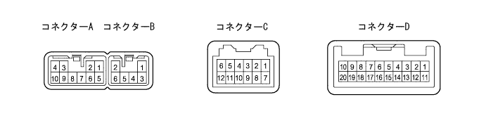

Audio System Terminals of ECU |

| Terminal No. | Terminal Symbol | Input/Output | Tester Connection Positive - Negative | Item | Measurement Condition | Specified Condition | Trouble symptom if out of standard O: When open circuit S: When shorted to body |
|---|---|---|---|---|---|---|---|
| 1 | FR+ | Output | A1-A7 | Waveform | Voice output in progress | A waveform synchronized with the sound is output | No sound from front speaker assembly No.1 (RH) and speaker assembly FR No.2 (RH) |
| 2 | FL+ | Output | A2-A7 | Waveform | Voice output in progress | A waveform synchronized with the sound is output | No sound from front speaker assembly No.1 (LH) and speaker assembly FR No.2 (LH) |
| 3 | ACC | Input | A3-A7 | Voltage | ACC ON | 11 to 14 V | O: System does not operate S: Fuse blown |
| 4 | B | Input | A4-A7 | Voltage | Always | 11 to 14 V | O: System does not operate S: Fuse blown |
| 5 | FR- | Output | A5-A7 | Waveform | Voice output in progress | A waveform synchronized with the sound is output | No sound from front speaker assembly No.1 (RH) and speaker assembly FR No.2 (RH) |
| 6 | FL- | Output | A6-A7 | Waveform | Voice output in progress | A waveform synchronized with the sound is output | No sound from front speaker assembly No.1 (LH) and speaker assembly FR No.2 (LH) |
| 7 | E | - | A7 - Body ground | Resistance | Always | Below 1 Ω | O: Slight increase in noise |
| 8 | ANT | Output | A8-A7 | Voltage | Receiving radio (AM/FM) | 11 to 14 V | Poor AM/FM reception sensitivity |
| 10 | ILL+ | Input | A10-A7 | Voltage | Headlight dimmer switch TAIL | 11 to 14 V | O: Night illumination does not come on S: Fuse blown |
| Terminal No. | Terminal Symbol | Input/Output | Tester Connection Positive - Negative | Item | Measurement Condition | Specified Condition | Trouble symptom if out of standard O: When open circuit S: When shorted to body |
|---|---|---|---|---|---|---|---|
| 1 | RR+ | Output | B1-A7 | Waveform | Voice output in progress | A waveform synchronized with the sound is output | No sound from speaker assembly RR (RH) |
| 2 | RL+ | Output | B2-A7 | Waveform | Voice output in progress | A waveform synchronized with the sound is output | No sound from speaker assembly RR (LH) |
| 3 | RR- | Output | B3-A7 | Waveform | Voice output in progress | A waveform synchronized with the sound is output | No sound from speaker assembly RR (RH) |
| 6 | RL- | Output | B6-A7 | Waveform | Voice output in progress | A waveform synchronized with the sound is output | No sound from speaker assembly RR (LH) |
| Terminal No. | Terminal Symbol | Input/Output | Tester Connection Positive - Negative | Item | Measurement Condition | Specified Condition | Trouble symptom if out of standard O: When open circuit S: When shorted to body |
|---|---|---|---|---|---|---|---|
| 3 | SPD | - | D3-A7 | Voltage | Drive at 5km/h or more | 1V or less to 9V or more | ASL (Auto Sound Levelizer) does not operate |
| 6 | SWG | - | D6-A7 | Resistance | Always | Below 1 Ω |
|
| 7 | SW1 | Input | D7-A7 | Voltage | No switch pressed → VOL- switch pressed → VOL+ switch pressed → SEEK- switch pressed → SEEK+ switch pressed | 2.7V or more → Approx. 2.3V → Approx. 1.6V → Approx. 1.0V → 0.8V or less | SEEK operation and volume adjustment cannot be performed with steering pad switch |
| 8 | SW2 | Input | D8-A7 | Voltage | No switch pressed → MODE switch pressed | 2.7V or more → 0.8V or less | MODE cannot be operated with the steering pad switch |